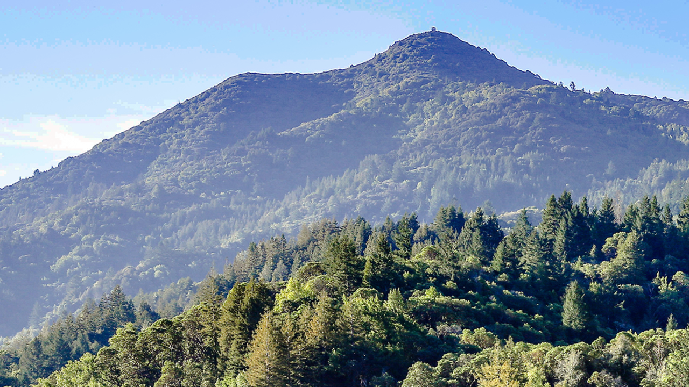

Personal Mountian Biking Stuff
My favorite Mountian Biking Trails to bike on (Up Hill And Down Hill)
Up Hill Trails
- Deer Park up to Five Corners
- FairFax enterence to top of Porcipine trail (ending at flow trail)
- Eldrigde
Down Hill Trails
- Porcipine Trail
- China Camp Bay Trail
- Old Rail Road Grade
Mountian Biking Gear/Modifications to my Mountian Bike I want to get/make
- Tires with better tred
- Dropper post
- better suspension on my front end
